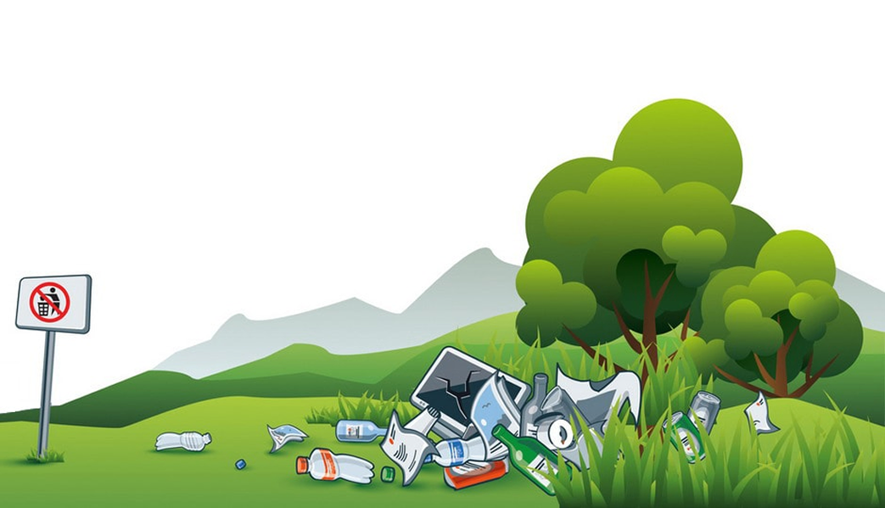

L'insostenibilità del
IL DESIGN
DELL'ACCELERAZIONE
L'inganno della smaterializzazione: un sistema progettato per l'accelerazione continua, che ignora i limiti fisici del pianeta.

IL CUORE FISICO
DEL CLOUD
Oltre la "Nuvola": la fisicità del digitale si basa su un estrattivismo intensivo e sul consumo energetico h24 dei Data Center.
L'EREDITÀ TOSSICA
DEI DATI
L'eredità tossica dell'obsolescenza e il peso fisico dell'informazione.

SOVRANITÀ ED
ECOLOGIA DIGITALE
È urgente una riprogettazione politica che imponga la durabilità, il diritto alla riparazione e una necessaria sobrietà.